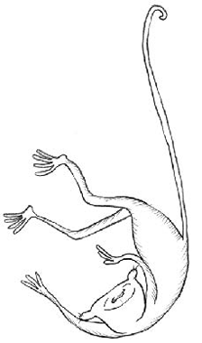

Acertó un mono trompeta
a dar cierta voltereta
con primor.
Apláudenlo en derredor,
pierde el tonto la chaveta
da otro tiro,
yerra el tiro,
y casi se desgolleta.
Los aplausos para el tonto
son un escollo fatal:
alabadle algo, y bien pronto
lo hará mal.